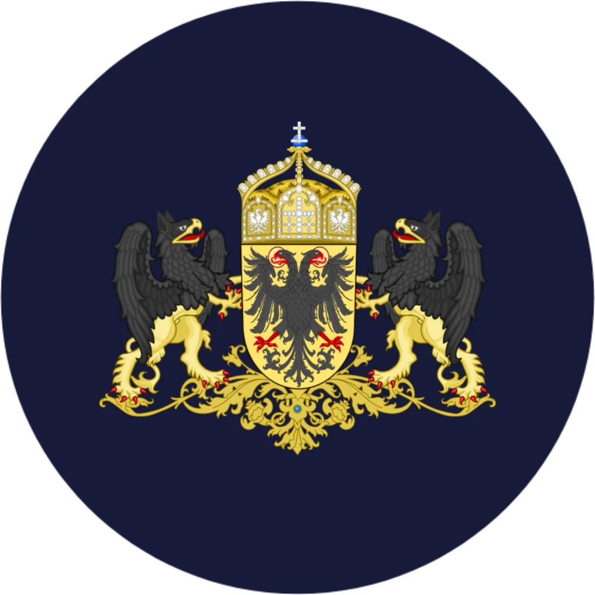
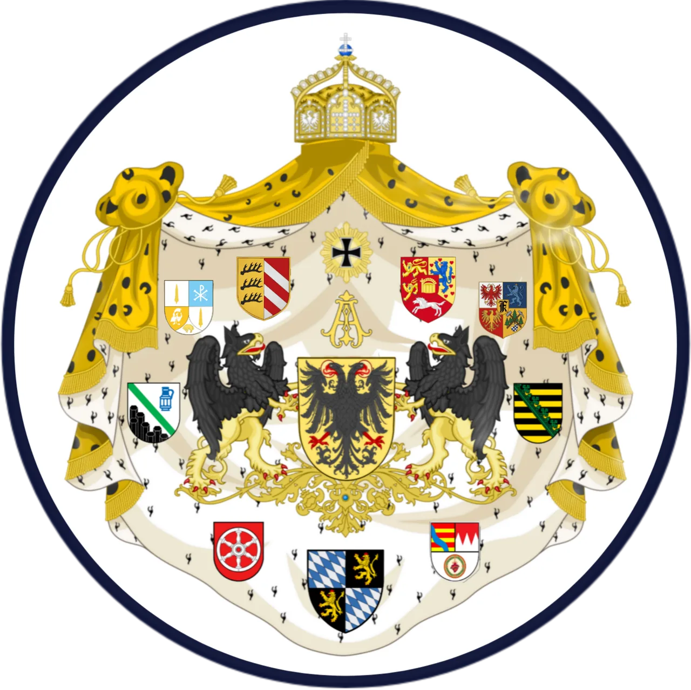
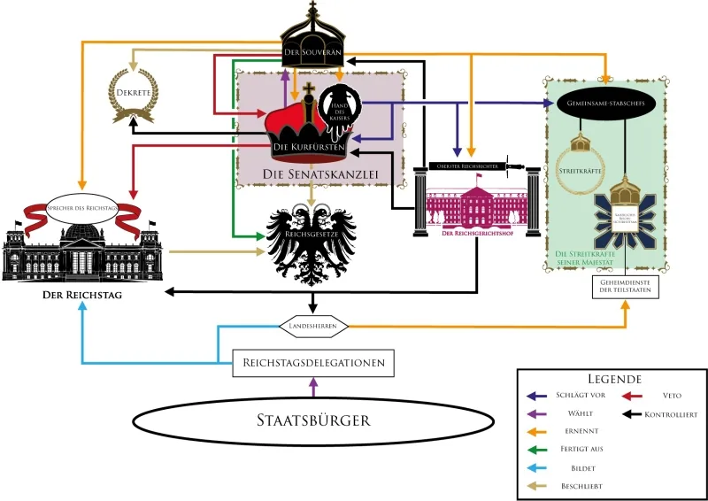
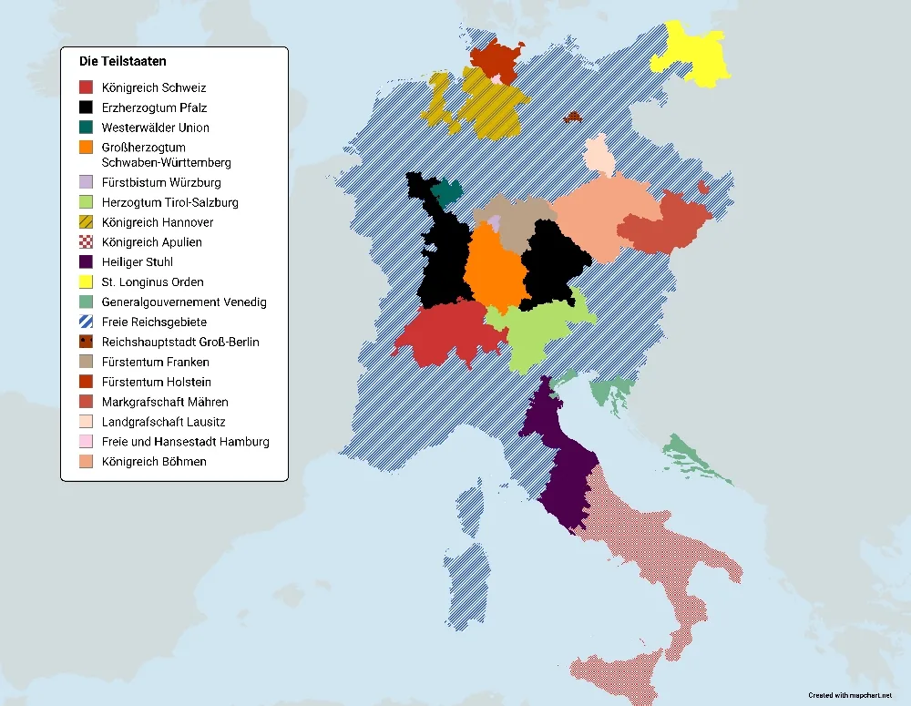

Für Monarchie-, Adels-, Militär- und Geschichtsliebhaber
Das interaktive Rollenspiel
Das Imperium Germanicum ist ein fiktiver Staatenbund in Europa, basierend auf den Grenzen des früheren Heiligen Römischen Reiches, es stellt eine alternative Gegenwart dar, in der das Heilige Römische Reich die Jahre überdauert hat und sich bis in die heutige Zeit weiterentwickelt hat.

- Hoheitsgebiet
- 1.205.000 km²
- Staatsbürger
- 217.000.000
- Kurfürsten im Senat
- 9
- Amtszeit des Kaisers
- 1 Jahr
Das Reich
Das Resultat dieser Entwicklung ist das Imperium Germanicum.
Das Imperium Germanicum besteht wie schon sein historisches Vorbild aus unzähligen kleineren Staaten, darunter verschiedene Fürstentümer, Königreiche, Herzogtümer und andere Gebietskörperschaften.
Sehr weit oben in der Hierarchie befinden sich die 9 Kurfürsten welche die 9 Landesoberhäupter der wichtigsten Teilstaaten des Reiches sind, sie bilden den sogenannten kaiserlichen Senat.
Eine der wichtigsten Aufgaben des Senats ist die Wahl des Souveräns und Staatsoberhaupts des Imperium Germanicum, des Kaisers.
Der Kaiser wird für 1 Jahr aus einem der 9 Kurfürsten gewählt und eine Wiederwahl ist unbegrenzt möglich.
Haben diese Informationen dein Interesse geweckt?
Schau dich gerne auf unserer Website um und werde ein Teil des Imperium Germanicum.

– Bild vergrößern
– Bild vergrößern
Mittel- und Südeuropa
Hoheitsgebiet des Imperium Germanicum
Das Imperium Germanicum befindet sich in Mittel- und Südeuropa und umfasst ein Hoheitsgebiet von 1.205.000 km².
Das Königreich Apulien ist aufgrund der Personalunion des Kaiserthrons mit dem Königsthron de facto ein Teil des Imperiums, sowie der Heilige Stuhl in dessen Gebiet seine Heiligkeit der Papst eine besondere Stellung innehat, jedoch seine Majestät der Kaiser die militärische und zivile Verwaltung kontrolliert.
Das Imperium Germanicum ist zudem als teilzentralisierter Bundesstaat organisiert.
Das Imperium besteht aus vielen Teilstaaten unterschiedlicher Größe, welche ihre inneren Angelegenheiten zumeist selbst bestimmen.
Hier gilt die von der Charta vorgeschriebene Regel, dass das Reichsrecht das Landesrecht bricht, wenn es Differenzen zwischen Gesetzen gibt.
Das gesamte Imperium Germanicum umfasst daher 217.000.000 Staatsbürger.
9 der Teilstaaten des Imperiums sind sogenannte Kurfürstentümer deren jeweiliges Landesoberhaupt als Kurfürst einen Sitz im Senat, dem exekutiven Organ des Imperiums innehat.
Alle anderen Landesoberhäupter haben mit ihrer jeweiligen Delegation einen Sitz im Reichstag, dem legislativen Organ des Imperiums.
Institutionen & Verfassung
Ein kleiner Überblick
Ein kleiner Vorgeschmack auf einige unserer zahlreichen Institutionen und die Verfassung des Reiches
02
Der Etiketten-Guide
Eine Anleitung zur Einhaltung der Etikette und Höflichkeit innerhalb des Reiches
Guide lesen
Staatsoberhaupt
Der Souverän
Der Souverän ist das offizielle Staatsoberhaupt des Imperium Germanicums, Amtsträger, Offiziere und Richter schwören ihm die Treue.
Der Souverän ernennt und entlässt die Beamten und Richter sowie Konsule des Reiches und bestellt sie nach Belieben ein, außerdem besitzt der Souverän die Möglichkeit Verurteilte zu begnadigen und über Dekrete gewisse Entscheidungen temporär ohne den Senat zu treffen.
Der Souverän ist der höchste Repräsentant des Reiches und genießt als solcher die höchste Würde, der Souverän hat immer das Recht angehört zu werden.